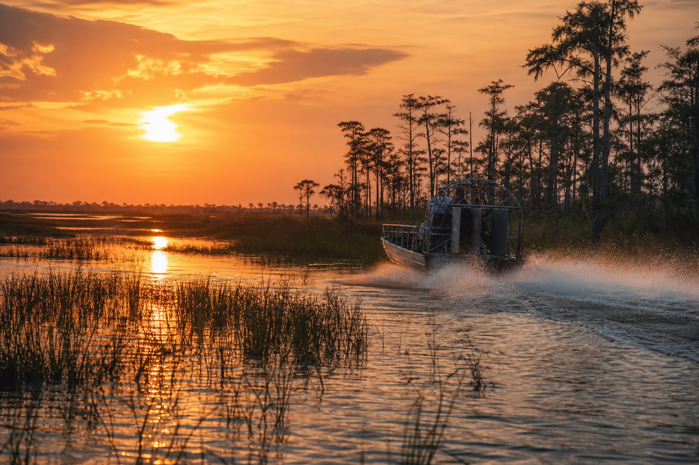
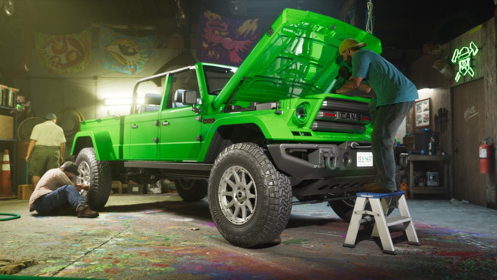
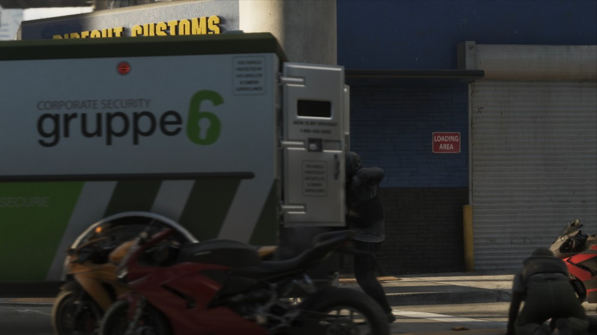
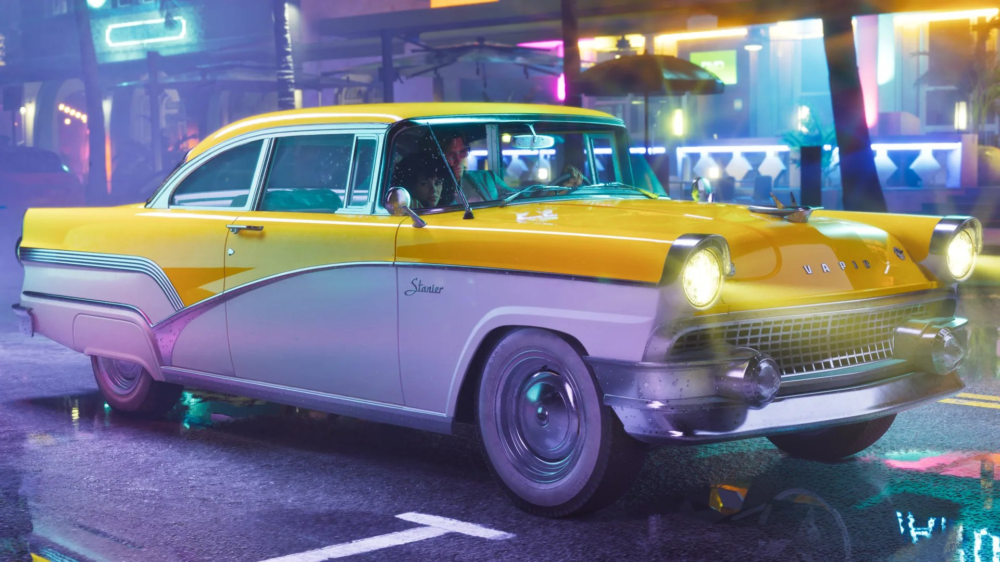
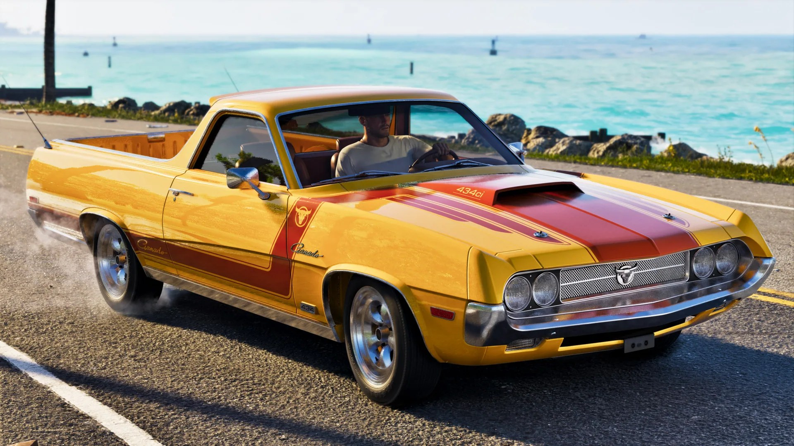
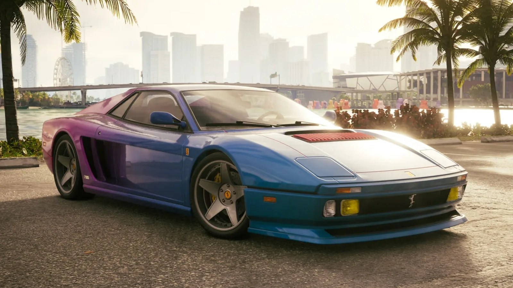
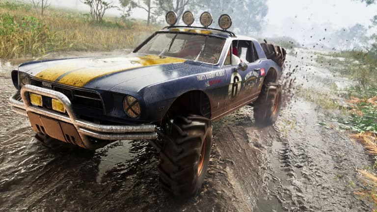
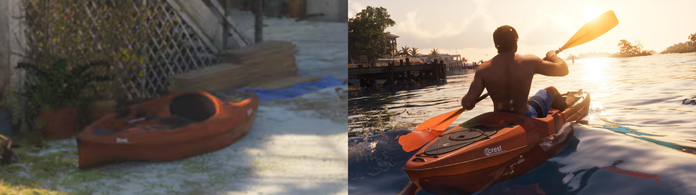

ACCUEIL / Véhicules
Sous-page · sourcée au 18 novembre 2026Véhicules & garages
Des voitures, bateaux et buggies de Leonida, avec ce qui est confirmé ou seulement rapporté.
Véhicules officielsOfficial vehicles
Rockstar n’a pas publié de liste complète des véhicules, ni de nombre total. Les noms ci-dessous proviennent des descriptions de boutique et des éditions, relayées par des guides.
Presse Source : overgear.com (17 novembre 2026), qui s’appuie sur les descriptions de la boutique. Vérifiez chaque description dans la boutique officielle.
| Véhicule | Type | Où l’obtenir (selon les sources) |
|---|---|---|
| ’55 Vapid Stanier | Berline classique | Bonus de précommande (Vintage Vice City Pack) |
| Vapid Ganado | Pick-up coupé | Voiture de Jason ; l’Ultimate Edition ajoute le modèle « Retro Build » |
| ’95 Grotti Cheetah | Sportive classique | Ultimate Edition |
| ’67 Vapid Dominator Buggy | Buggy tout-terrain | Ultimate Edition |
| Dinka Enduro | Moto | Ultimate Edition |
| Shitzu Squalo | Bateau rapide | Ultimate Edition |
| Crest Kayak | Kayak | Ultimate Edition |
Les véhicules des éditions sont exclusifs à certaines éditions. Le détail des éditions est dans la page Éditions (groupe 3).
Terre, eau et airLand, water and air

Visuel IA, non officiel : Grassrivers, d’après la présentation officielle de l’airboatAirboat
Rockstar montre un homme avec un fusil à bord d’un airboat dans les Grassrivers. C’est le véhicule des marais.
Eau
Des bateaux à moteur, jet-skis et kayaks apparaissent dans les vidéos. Le jeu permet la conduite de plusieurs d’entre eux selon des sources de presse.
Avions et hélicoptères
Des hélicoptères et des avions apparaissent dans le matériel. Savoir s’ils sont pilotables n’est pas confirmé par Rockstar à ce stade.
Ateliers tuningMod shops

Source : Wiki : gta.wiki (page One-Eyed Willie’s)One-Eyed Willie’s
Atelier de modifications tout-terrain au bord du lac Leonida, avec des peintures artisanales. Il fait partie de l’Ultimate Edition selon les descriptions de boutique.

Source : Wiki : gta.wiki (page Rideout Customs), signalétique partielleRideout Customs
Second atelier mentionné dans les descriptions de l’Ultimate Edition. Son emplacement n’est pas précisé.
Carburant, dégâts et fourrièreFuel, damage and impound
Selon des critiques et des compilations, le carburant (et la recharge électrique) existe, les dégâts persistent sur la carrosserie et les fourrières permettent de récupérer une voiture saisie. Les effets sur le jeu restent à vérifier.
Presse FinalWeapon et playday.one, 18 novembre 2026, décrivent le carburant comme peu contraignant ; un guide tiers évoque aussi les fourrières.
Les sources ne confirment pas le nombre total de véhicules : les compilations citent des chiffres allant de 155 à plus de 300. Ces écarts dépendent de la méthode de comptage.
Images de référenceReference images
Véhicules nommés officiellement (boutique, éditions). Les images viennent de sites de presse ou de wiki : ce sont des images de référence à vérifier, pas des captures officielles certifiées.

’55 Vapid Stanier
Berline du pack Vintage Vice City (précommande). Présentée comme capture officielle par un site de presse.
Source : Presse : gta.tech4gamers.com

Vapid Ganado
Pick-up nommé dans la boutique et les éditions ; ici une version « Retro Build » présentée comme capture officielle.
Source : Presse : gta.tech4gamers.com

’95 Grotti Cheetah
Supercar nommée dans les éditions. Capture in-game partagée lors d’un article de presse.
Source : Presse : leonidainteractive.com (wiki)

’67 Vapid Dominator Buggy
Buggy nommé dans les éditions. Image issue d’une fiche wiki, à vérifier en jeu.
Source : Wiki : dexerto.com

Crest Kayak
Kayak nommé dans l’édition Ultime. Image issue d’une capture partagée sur Reddit (r/GTA).
Source : Communauté : Reddit r/GTA